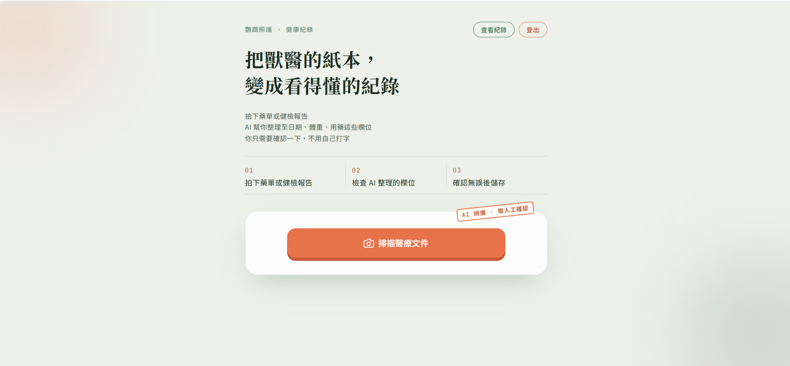

軟體工程師・學習中
把想法一一實現。
目前正往軟體工程師的路上前進，喜歡把腦中的點子做成能跑起來的系統
從資料庫設計、後端 API 到前端介面，皆有實際操作經驗
家裡養了兩隻牡丹鸚鵡，牠們常在我用電腦時湊熱鬧
作品集裡的 ParrotCare，就是因為牠們而誕生的<3

多因子驗證與安全防護機制・2025/6 ~ 2026/1
使用 AI Coding 開發的校園登入系統，整合多因子驗證來提升帳號安全性。自主研究並實作 Microsoft Authenticator 使用的 TOTP 協定，做出雙重驗證；同時設計 Rate Limit 與 Captcha，阻擋自動化暴力破解，並針對資料庫 API 做安全性優化。前後端串接、資料庫規劃與 PHP 驗證邏輯都由我負責。